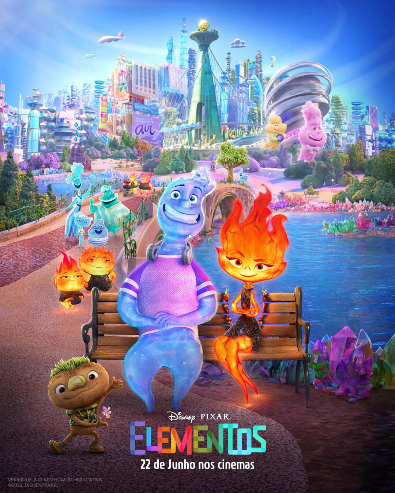
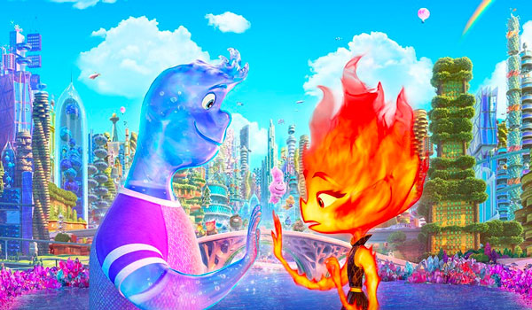
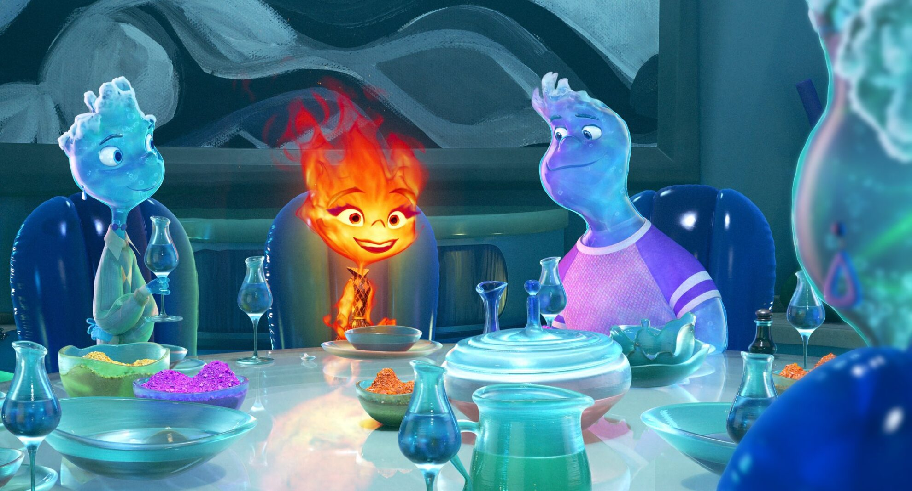
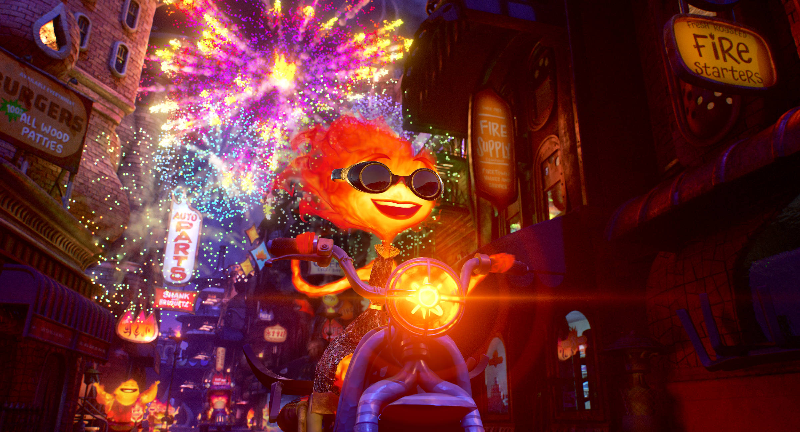

Filme Elementos

Elementos, a nova animação da Pixar, chegou ao Disney+ no dia 13 de agosto. O filme, dirigido por Peter Sohn (O Bom Dinossauro), fala sobre Faísca e Gota, dois moradores da cidade Elemento. Apesar de serem verdadeiros opostos, os destinos dos protagonistas de fogo e água se cruzam após um incidente.
Em uma cidade onde os habitantes de fogo, água, terra e ar convivem, uma jovem mulher flamejante e um rapaz que vive seguindo o fluxo descobrem algo surpreendente, porém elementar: o quanto eles têm em comum.

Qual mensagem passa o filme Elementos?
No caso de Elementos, uma das mensagens mais importantes para os pais é não colocar expectativas sobre seus filhos. A história de Faísca reflete a luta que muitos enfrentam quando estão divididos entre perseguir nossos próprios sonhos e corresponder às expectativas dos pais.
Onde se passa o filme Elementos?
Elementos é um filme de animação que se passa em uma sociedade extraordinária chamada Cidade Elemento, na qual os quatro elementos da natureza - ar, terra, fogo e ar - vivem em completa harmonia.
A mensagem mais óbvia do filme é, com toda certeza, a aceitação da diferença. A amizade de Faísca e Gota desafia as crenças sociais sobre as diferenças entre eles.
Em toda a Cidade Elemento, os personagens coexistem, mas nem sempre se aceitam. Pessoas de Fogo, por exemplo, são basicamente evitadas pelo resto da população.
No filme, entende-se como abraçar a diversidade e aceitar cada indivíduo do jeito que ele é pode ser importante para o sucesso de todos como grupo.

No filme, os protagonistas vivem se surpreendendo porque, diferente do que pensavam, eles não são aquilo que o outro imaginava. Quer dizer, nem todo mundo de Fogo tem o temperamento explosivo e nem toda pessoa de Água é “escorregadia”.
Na produção da Pixar, os personagens entendem que ao enxergar as pessoas para além de preconceitos ou estereótipos, algo incrível acontece: eles também passam a se ver de forma mais livre.
No filme, Faísca não apenas aprende a criar uma relação diferente com Gota, como também aprende a se permitir sonhar e pensar coisas que, antes, ela achava que não podia.
Aos poucos, ela vai entendendo melhor o que gosta e o que quer da vida, sem impôr preconceitos e barreiras a si própria. Dessa forma, entende o que a faz feliz e se esforça em ser cada vez mais autêntica e sincera.

Viaje para a mágica Cidade Elemento para acompanhar a jornada de autodescoberta de Faísca, Gota e todos os cidadãos do lugar! Deixe-se surpreender vendo Elementos, disponível exclusivamente no Disney+!